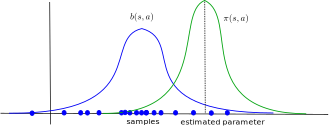

Monte Carlo methods
In dynamic programming, policy evaluation was done by explicitly solving the Bellman equations. In Monte Carlo (and temporal difference) methods, policy evaluation relies on sampling.
Monte Carlo policy evaluation
When the environment is a priori unknown, it has to be explored in order to build estimates of the V or Q value functions. The key idea of Monte Carlo sampling (MC) is rather simple: the expected return in state \(s\) is approximated by sampling \(M\) trajectories \(\tau_i\) starting from \(s\) and computing the sampling average of the obtained returns:
\[ V^{\pi}(s) = \mathbb{E}_{\rho_\pi} (R_t | s_t = s) \approx \frac{1}{M} \sum_{i=1}^M R(\tau_i) \]
If you have enough trajectories, the sampling average is an unbiased estimator of the value function. The advantage of Monte Carlo methods is that they require only experience, not the complete dynamics \(p(s' | s,a)\) and \(r(s, a, s')\). The idea of MC policy evaluation is therefore to repeatedly sample episodes starting from each possible state \(s_0\) and maintain a running average of the obtained returns for each state:
Q-values can also be approximated using the same procedure:
\[ Q(s_t, a_t) \leftarrow Q(s_t, a_t) + \alpha (R_t - Q(s_t, a_t)) \]
The two main drawbacks of MC methods are:
- The task must be episodic, i.e. stop after a finite amount of transitions. Updates are only applied at the end of an episode.
- A sufficient level of exploration has to be ensured to make sure the estimates converge to the optimal values.
The second issue is linked to the exploration-exploitation dilemma already seen with bandits: the episode is generated using the current policy (or a policy derived from it, see later). If the policy always select the same actions from the beginning (exploitation), the agent will never discover better alternatives: the values will converge to a local minimum. If the policy always pick randomly actions (exploration), the policy which is evaluated is not the current policy \(\pi\), but the random policy. A trade-off between the two therefore has to be maintained: usually a lot of exploration at the beginning of learning to accumulate knowledge about the environment, less towards the end to actually use the knowledge and perform optimally.
There are two types of methods trying to cope with exploration:
- On-policy methods generate the episodes using the learned policy \(\pi\), but it has to be \(\epsilon\)-soft, i.e. stochastic: it has to let a probability of at least \(\epsilon\) of selecting another action than the greedy action (the one with the highest estimated Q-value).
- Off-policy methods use a second policy called the behavior policy to generate the episodes, but learn a different policy for exploitation, which can even be deterministic.
On-policy Monte Carlo methods
\(\epsilon\)-soft policies are easy to create, and we have already seen them in Section ?@sec-bandits. The simplest one is the \(\epsilon\)-greedy action selection method, which assigns a probability \((1-\epsilon)\) of selecting the greedy action (the one with the highest Q-value), and a probability \(\epsilon\) of selecting any of the other available actions:
\[ a_t = \begin{cases} a_t^* \quad \text{with probability} \quad (1 - \epsilon) \\ \text{any other action with probability } \epsilon \end{cases} \]
Another solution is the Softmax (or Gibbs distribution) action selection method, which assigns to each action a probability of being selected depending on their relative Q-values:
\[ P(s, a) = \frac{\exp Q(s, a) / \tau}{ \sum_b \exp Q(s, b) / \tau} \]
\(\tau\) is a positive parameter called the temperature: high temperatures make the actions nearly equiprobable (random policy), while low temperatures only select the actions with the highest Q-values (greedy policy).
In on-policy MC control, each sample episode is generated using the current policy, which ensures exploration, while the control method still converges towards the optimal \(\epsilon\)-policy.
Off-policy Monte Carlo methods
Another option to ensure exploration is to generate the sample episodes using a behavior policy \(b(s, a)\) different from the learned policy \(\pi(s, a)\) of the agent. The behavior policy \(b(s, a)\) used to generate the episodes is only required to select at least occasionally the same actions as the learned policy \(\pi(s, a)\) (coverage assumption).
\[ \pi(s,a) > 0 \Rightarrow b(s,a) > 0\]
There are mostly two choices regarding the behavior policy:
- An \(\epsilon\)-soft behavior policy over the Q-values as in on-policy MC is often enough, while a deterministic (greedy) policy can be learned implictly.
- The behavior policy could also come from expert knowledge, i.e. known episodes from the MDP generated by somebody else (human demonstrator, classical algorithm).
But are we mathematically allowed to do this? We search for the optimal policy that maximizes in expectation the return of each trajectory (episode) possible under the learned policy \(\pi\):
\[\mathcal{J}(\pi) = \mathbb{E}_{\tau \sim \rho_\pi} [R(\tau)]\]
\(\rho_\pi\) denotes the probability distribution of trajectories achievable using the policy \(\pi\). If we generate the trajectories from the behavior policy \(b(s, a)\), we end up maximizing something else:
\[\mathcal{J}'(\pi) = \mathbb{E}_{\tau \sim \rho_b} [R(\tau)]\]
The policy that maximizes \(\mathcal{J}'(\pi)\) is not the optimal policy of the MDP.

If you try to estimate a parameter of a random distribution \(\pi\) using samples of another distribution \(b\), the sample average will have a strong bias. We need to correct the samples from \(b\) in order to be able to estimate the parameters of \(\pi\) correctly, through importance sampling (IS).
Importance sampling
We want to estimate the expected return of the trajectories generated by the policy \(\pi\):
\[\mathcal{J}(\pi) = \mathbb{E}_{\tau \sim \rho_\pi} [R(\tau)]\]
We start by using the definition of the mathematical expectation:
\[\mathcal{J}(\pi) = \int_\tau \rho_\pi(\tau) \, R(\tau) \, d\tau\]
The expectation is the integral over all possible trajectories of their return \(R(\tau\)), weighted by the likelihood \(\rho_\pi(\tau)\) that a trajectory \(\tau\) is generated by the policy \(\pi\).
The trick is to introduce the behavior policy \(b\) in what we want to estimate:
\[\mathcal{J}(\pi) = \int_\tau \frac{\rho_b(\tau)}{\rho_b(\tau)} \, \rho_\pi(\tau) \, R(\tau) \, d\tau\]
\(\rho_b(\tau)\) is the likelihood that a trajectory \(\tau\) is generated by the behavior policy \(b\). We shuffle a bit the terms:
\[\mathcal{J}(\pi) = \int_\tau \rho_b(\tau) \, \frac{\rho_\pi(\tau)}{\rho_b(\tau)} \, R(\tau) \, d\tau\]
and notice that it has the form of an expectation over trajectories generated by \(b\):
\[\mathcal{J}(\pi) = \mathbb{E}_{\tau \sim \rho_b} [\frac{\rho_\pi(\tau)}{\rho_b(\tau)} \, R(\tau)]\]
This means that we can sample trajectories from \(b\), but we need to correct the observed return by the importance sampling weight \(\dfrac{\rho_\pi(\tau)}{\rho_b(\tau)}\).
The importance sampling weight corrects the mismatch between \(\pi\) and \(b\).
If the two distributions are the same (on-policy), the IS weight is 1, no need to correct the return.
- If a sample is likely under \(b\) but not under \(\pi\), we should not care about its return: \(\dfrac{\rho_\pi(\tau)}{\rho_b(\tau)} << 1\)
- If a sample is likely under \(\pi\) but not much under \(b\), we increase its importance in estimating the return: \(\dfrac{\rho_\pi(\tau)}{\rho_b(\tau)} >> 1\)
The sampling average of the corrected samples will be closer from the true estimate (unbiased).
How do we compute these probability distributions \(\rho_\pi(\tau)\) and \(\rho_b(\tau)\) for a trajectory \(\tau\)? A trajectory \(\tau\) is a sequence of state-action transitions \((s_0, a_0, s_1, a_1, \ldots, s_T)\) whose probability depends on:
- the probability of choosing an action \(a_t\) in state \(s_t\): the policy \(\pi(s, a)\).
- the probability of arriving in the state \(s_{t+1}\) from the state \(s_t\) with the action \(a_t\): the transition probability \(p(s_{t+1} | s_t, a_t)\).

The likelihood of a trajectory \(\tau = (s_0, a_0, s_1, a_1, \ldots, s_T)\) under a policy \(\pi\) depends on the policy and the transition probabilities (Markov property):
\[ \rho_\pi(\tau) = p_\pi(s_0, a_0, s_1, a_1, \ldots, s_T) = p(s_0) \, \prod_{t=0}^{T-1} \pi_\theta(s_t, a_t) \, p(s_{t+1} | s_t, a_t) \]
\(p(s_0)\) is the probability of starting an episode in \(s_0\), we do not have control over it.
What is interesting is that the transition probabilities disappear when calculating the importance sampling weight:
\[ \rho_{0:T-1} = \frac{\rho_\pi(\tau)}{\rho_b(\tau)} = \frac{p_0 (s_0) \, \prod_{t=0}^{T-1} \pi(s_t, a_t) p(s_{t+1} | s_t, a_t)}{p_0 (s_0) \, \prod_{t=0}^T b(s_t, a_t) p(s_{t+1} | s_t, a_t)} = \frac{\prod_{t=0}^{T-1} \pi(s_t, a_t)}{\prod_{t=0}^T b(s_t, a_t)} = \prod_{t=0}^{T-1} \frac{\pi(s_t, a_t)}{b(s_t, a_t)} \]
The importance sampling weight is simply the product over the length of the episode of the ratio between \(\pi(s_t, a_t)\) and \(b(s_t, a_t)\).
Off-policy Monte Carlo control
In off-policy MC control, we generate episodes using the behavior policy \(b\) and update greedily the learned policy \(\pi\). For the state \(s_t\), the obtained returns just need to be weighted by the relative probability of occurrence of the rest of the episode following the policies \(\pi\) and \(b\):
\[\rho_{t:T-1} = \prod_{k=t}^{T-1} \frac{\pi(s_k, a_k)}{b(s_k, a_k)}\]
\[V^\pi(s_t) = \mathbb{E}_{\tau \sim \rho_b} [\rho_{t:T-1} \, R_t]\]
This gives us the updates:
\[ V(s_t) = V(s_t) + \alpha \, \rho_{t:T-1} \, (R_t - V(s_t)) \]
and:
\[ Q(s_t, a_t) = Q(s_t, a_t) + \alpha \, \rho_{t:T-1} \, (R_t - Q(s_t, a_t)) \]
Unlikely episodes under \(\pi\) are barely used for learning, likely ones are used a lot.
Problem 1: if the learned policy is greedy, the IS weight becomes quickly 0 for a non-greedy action \(a_t\):
\[\pi(s_t, a_t) = 0 \rightarrow \rho_{0:T-1} = \prod_{k=0}^{T-1} \frac{\pi(s_k, a_k)}{b(s_k, a_k)} = 0\]
Off-policy MC control only learns from the last greedy actions, what is slow at the beginning.
Solution: \(\pi\) and \(b\) should not be very different. Usually \(\pi\) is greedy and \(b\) is a softmax (or \(\epsilon\)-greedy) over it.
Problem 2: if the learned policy is stochastic, the IS weights can quickly vanish to 0 or explode to infinity:
\[\rho_{t:T-1} = \prod_{k=t}^{T-1} \frac{\pi(s_k, a_k)}{b(s_k, a_k)}\]
If \(\dfrac{\pi(s_k, a_k)}{b(s_k, a_k)}\) is smaller than 1, the products go to 0. If it is bigger than 1, it grows to infinity.
Solution: one can normalize the IS weight between different episodes (see Sutton and Barto) or clip it (e.g. restrict it to [0.9, 1.1], see PPO later in this course).
Advantages of off-policy methods
The main advantage of off-policy strategies is that you can learn from other’s actions, you don’t have to rely on your initially wrong policies to discover the solution by chance. Example: learning to play chess by studying thousands/millions of plays by chess masters. In a given state, only a subset of the possible actions are actually executed by experts: the others may be too obviously wrong. The exploration is then guided by this expert knowledge, not randomly among all possible actions.
Off-policy methods greatly reduce the number of transitions needed to learn a policy: very stupid actions are not even considered, but the estimation policy learns an optimal strategy from the “classical” moves. Drawback: if a good move is not explored by the behavior policy, the learned policy will never try it.